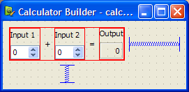

Using a Designer UI File in Your C++ Application
Qt Designer UI files represent the widget tree of the form in XML format. The forms can be processed:
- At compile time, which means that forms are converted to C++ code that can be compiled.
- At runtime, which means that forms are processed by the QUiLoader class that dynamically constructs the widget tree while parsing the XML file.
Compile Time Form Processing
You create user interface components with Qt Designer and use Qt's integrated build tools, qmake and uic, to generate code for them when the application is built. The generated code contains the form's user interface object. It is a C++ struct that contains:
- Pointers to the form's widgets, layouts, layout items, button groups, and actions.
- A member function called
setupUi()to build the widget tree on the parent widget. - A member function called
retranslateUi()that handles the translation of the string properties of the form. For more information, see Reacting to Language Changes.
The generated code can be included in your application and used directly from it. Alternatively, you can use it to extend subclasses of standard widgets.
A compile time processed form can be used in your application with one of the following approaches:
- The Direct Approach: you construct a widget to use as a placeholder for the component, and set up the user interface inside it.
- The Single Inheritance Approach: you subclass the form's base class (QWidget or QDialog, for example), and include a private instance of the form's user interface object.
- The Multiple Inheritance Approach: you subclass both the form's base class and the form's user interface object. This allows the widgets defined in the form to be used directly from within the scope of the subclass.
To demonstrate, we create a simple Calculator Form application. It is based on the original Calculator Form example.
The application consists of one source file, main.cpp and a UI file.
The calculatorform.ui file designed with Qt Designer is shown below:

When using CMake to build the executable, a CMakeLists.txt file is required:
cmake_minimum_required(VERSION 3.16)
project(calculatorform LANGUAGES CXX)
set(CMAKE_AUTOMOC ON)
set(CMAKE_AUTOUIC ON)
find_package(Qt6 REQUIRED COMPONENTS Core Gui Widgets)
qt_add_executable(calculatorform
calculatorform.ui main.cpp)
set_target_properties(calculatorform PROPERTIES
WIN32_EXECUTABLE TRUE
MACOSX_BUNDLE TRUE
)
target_link_libraries(calculatorform PUBLIC
Qt::Core
Qt::Gui
Qt::Widgets
)
The form is listed among the C++ source files in qt_add_executable(). The option CMAKE_AUTOUIC tells CMake to run the uic tool to create a ui_calculatorform.h file that can be used by the source files.
When using qmake to build the executable, a .pro file is required:
TEMPLATE = app FORMS = calculatorform.ui SOURCES = main.cpp
The special feature of this file is the FORMS declaration that tells qmake which files to process with uic. In this case, the calculatorform.ui file is used to create a ui_calculatorform.h file that can be used by any file listed in the SOURCES declaration.
Note: You can use Qt Creator to create the Calculator Form project. It automatically generates the main.cpp, UI, and a project file for the desired build tool, which you can modify.
The Direct Approach
To use the direct approach, we include the ui_calculatorform.h file directly in main.cpp:
#include "ui_calculatorform.h"
The main function creates the calculator widget by constructing a standard QWidget that we use to host the user interface described by the calculatorform.ui file.
int main(int argc, char *argv[]) { QApplication app(argc, argv); QWidget widget; Ui::CalculatorForm ui; ui.setupUi(&widget); widget.show(); return app.exec(); }
In this case, the Ui::CalculatorForm is an interface description object from the ui_calculatorform.h file that sets up all the dialog's widgets and the connections between its signals and slots.
The direct approach provides a quick and easy way to use simple, self-contained components in your applications. However, componens created with Qt Designer often require close integration with the rest of the application code. For instance, the CalculatorForm code provided above will compile and run, but the QSpinBox objects will not interact with the QLabel as we need a custom slot to carry out the add operation and display the result in the QLabel. To achieve this, we need to use the single inheritance approach.
The Single Inheritance Approach
To use the single inheritance approach, we subclass a standard Qt widget and include a private instance of the form's user interface object. This can take the form of:
- A member variable
- A pointer member variable
Using a Member Variable
In this approach, we subclass a Qt widget and set up the user interface from within the constructor. Components used in this way expose the widgets and layouts used in the form to the Qt widget subclass, and provide a standard system for making signal and slot connections between the user interface and other objects in your application. The generated Ui::CalculatorForm structure is a member of the class.
This approach is used in the Calculator Form example.
To ensure that we can use the user interface, we need to include the header file that uic generates before referring to Ui::CalculatorForm:
#include "ui_calculatorform.h"
The project file must be updated to include calculatorform.h. For CMake:
qt_add_executable(calculatorform
calculatorform.cpp calculatorform.h calculatorform.ui
main.cpp
)
For qmake:
HEADERS = calculatorform.h
The subclass is defined in the following way:
class CalculatorForm : public QWidget { Q_OBJECT public: explicit CalculatorForm(QWidget *parent = nullptr); private slots: void updateResult(); private: Ui::CalculatorForm ui; };
The important feature of the class is the private ui object which provides the code for setting up and managing the user interface.
The constructor for the subclass constructs and configures all the widgets and layouts for the dialog just by calling the ui object's setupUi() function. Once this has been done, it is possible to modify the user interface as needed.
CalculatorForm::CalculatorForm(QWidget *parent) : QWidget(parent) { ui.setupUi(this); connect(ui.inputSpinBox1, &QSpinBox::valueChanged, this, &CalculatorForm::updateResult); connect(ui.inputSpinBox2, &QSpinBox::valueChanged, this, &CalculatorForm::updateResult); }
We can connect signals and slots in user interface widgets in the usual way by adding the on_<object name> - prefix. For more information, see widgets-and-dialogs-with-auto-connect.
The advantages of this approach are its simple use of inheritance to provide a QWidget-based interface, and its encapsulation of the user interface widget variables within the ui data member. We can use this method to define a number of user interfaces within the same widget, each of which is contained within its own namespace, and overlay (or compose) them. This approach can be used to create individual tabs from existing forms, for example.
Using a Pointer Member Variable
Alternatively, the Ui::CalculatorForm structure can be made a pointer member of the class. The header then looks as follows:
namespace Ui { class CalculatorForm; } class CalculatorForm : public QWidget ... virtual ~CalculatorForm(); ... private: Ui::CalculatorForm *ui; ...
The corresponding source file looks as follows:
#include "ui_calculatorform.h" CalculatorForm::CalculatorForm(QWidget *parent) : QWidget(parent), ui(new Ui::CalculatorForm) { ui->setupUi(this); } CalculatorForm::~CalculatorForm() { delete ui; }
The advantage of this approach is that the user interface object can be forward-declared, which means that we do not have to include the generated ui_calculatorform.h file in the header. The form can then be changed without recompiling the dependent source files. This is particularly important if the class is subject to binary compatibility restrictions.
We generally recommend this approach for libraries and large applications. For more information, see Creating Shared Libraries.
The Multiple Inheritance Approach
Forms created with Qt Designer can be subclassed together with a standard QWidget-based class. This approach makes all the user interface components defined in the form directly accessible within the scope of the subclass, and enables signal and slot connections to be made in the usual way with the connect() function.
We need to include the header file that uic generates from the calculatorform.ui file, as follows:
#include "ui_calculatorform.h"
The class is defined in a similar way to the one used in the single inheritance approach, except that this time we inherit from both QWidget and Ui::CalculatorForm, as follows:
class CalculatorForm : public QWidget, private Ui::CalculatorForm { Q_OBJECT public: explicit CalculatorForm(QWidget *parent = nullptr); private slots: void on_inputSpinBox1_valueChanged(int value); void on_inputSpinBox2_valueChanged(int value); };
We inherit Ui::CalculatorForm privately to ensure that the user interface objects are private in our subclass. We can also inherit it with the public or protected keywords in the same way that we could have made ui public or protected in the previous case.
The constructor for the subclass performs many of the same tasks as the constructor used in the single inheritance example:
CalculatorForm::CalculatorForm(QWidget *parent) : QWidget(parent) { setupUi(this); }
In this case, the widgets used in the user interface can be accessed in the same say as a widget created in code by hand. We no longer require the ui prefix to access them.
Reacting to Language Changes
Qt notifies applications if the user interface language changes by sending an event of the type QEvent::LanguageChange. To call the member function retranslateUi() of the user interface object, we reimplement QWidget::changeEvent() in the form class, as follows:
void CalculatorForm::changeEvent(QEvent *e) { QWidget::changeEvent(e); switch (e->type()) { case QEvent::LanguageChange: ui->retranslateUi(this); break; default: break; } }
Run Time Form Processing
Alternatively, forms can be processed at run time, producing dynamically- generated user interfaces. This can be done using the QtUiTools module that provides the QUiLoader class to handle forms created with Qt Designer.
The UiTools Approach
A resource file containing a UI file is required to process forms at run time. Also, the application needs to be configured to use the QtUiTools module. This is done by including the following declarations in a CMake project file, ensuring that the application is compiled and linked appropriately.
find_package(Qt6 REQUIRED COMPONENTS Core Gui UiTools Widgets)
target_link_libraries(textfinder PUBLIC
Qt::Core
Qt::Gui
Qt::UiTools
Qt::Widgets
)
For qmake:
QT += uitools
The QUiLoader class provides a form loader object to construct the user interface. This user interface can be retrieved from any QIODevice, e.g., a QFile object, to obtain a form stored in a project's resource file. The QUiLoader::load() function constructs the form widget using the user interface description contained in the file.
The QtUiTools module classes can be included using the following directive:
#include <QtUiTools>
The QUiLoader::load() function is invoked as shown in this code from the Text Finder example:
static QWidget *loadUiFile(QWidget *parent) { QFile file(u":/forms/textfinder.ui"_s); file.open(QIODevice::ReadOnly); QUiLoader loader; return loader.load(&file, parent); }
In a class that uses QtUiTools to build its user interface at run time, we can locate objects in the form using QObject::findChild(). For example, in the following code, we locate some components based on their object names and widget types:
ui_findButton = findChild<QPushButton*>("findButton");
ui_textEdit = findChild<QTextEdit*>("textEdit");
ui_lineEdit = findChild<QLineEdit*>("lineEdit");
Processing forms at run-time gives the developer the freedom to change a program's user interface, just by changing the UI file. This is useful when customizing programs to suit various user needs, such as extra large icons or a different colour scheme for accessibility support.
Automatic Connections
The signals and slots connections defined for compile time or run time forms can either be set up manually or automatically, using QMetaObject's ability to make connections between signals and suitably-named slots.
Generally, in a QDialog, if we want to process the information entered by the user before accepting it, we need to connect the clicked() signal from the OK button to a custom slot in our dialog. We will first show an example of the dialog in which the slot is connected by hand then compare it with a dialog that uses automatic connection.
A Dialog Without Auto-Connect
We define the dialog in the same way as before, but now include a slot in addition to the constructor:
class ImageDialog : public QDialog, private Ui::ImageDialog { Q_OBJECT public: explicit ImageDialog(QWidget *parent = nullptr); private slots: void checkValues(); };
The checkValues() slot will be used to validate the values provided by the user.
In the dialog's constructor we set up the widgets as before, and connect the Cancel button's clicked() signal to the dialog's reject() slot. We also disable the autoDefault property in both buttons to ensure that the dialog does not interfere with the way that the line edit handles return key events:
ImageDialog::ImageDialog(QWidget *parent) : QDialog(parent) { setupUi(this); okButton->setAutoDefault(false); cancelButton->setAutoDefault(false); ... connect(okButton, &QAbstractButton::clicked, this, &ImageDialog::checkValues); }
We connect the OK button's clicked() signal to the dialog's checkValues() slot which we implement as follows:
void ImageDialog::checkValues() { if (nameLineEdit->text().isEmpty()) { QMessageBox::information(this, tr("No Image Name"), tr("Please supply a name for the image."), QMessageBox::Cancel); } else { accept(); } }
This custom slot does the minimum necessary to ensure that the data entered by the user is valid - it only accepts the input if a name was given for the image.
Widgets and Dialogs with Auto-Connect
Although it is easy to implement a custom slot in the dialog and connect it in the constructor, we could instead use QMetaObject's auto-connection facilities to connect the OK button's clicked() signal to a slot in our subclass. uic automatically generates code in the dialog's setupUi() function to do this, so we only need to declare and implement a slot with a name that follows a standard convention:
void on_<object name>_<signal name>(<signal parameters>);
Note: When renaming widgets in the form, the slot names need to be adapted accordingly, which can become a maintenance problem. For this reason, we recommend against using this in new code.
Using this convention, we can define and implement a slot that responds to mouse clicks on the OK button:
class ImageDialog : public QDialog, private Ui::ImageDialog { Q_OBJECT public: explicit ImageDialog(QWidget *parent = nullptr); private slots: void on_okButton_clicked(); };
Another example of automatic signal and slot connection would be the Text Finder with its on_findButton_clicked() slot.
We use QMetaObject's system to enable signal and slot connections:
QMetaObject::connectSlotsByName(this);
This enables us to implement the slot, as shown below:
void TextFinder::on_findButton_clicked() { QString searchString = ui_lineEdit->text(); QTextDocument *document = ui_textEdit->document(); bool found = false; // undo previous change (if any) document->undo(); if (searchString.isEmpty()) { QMessageBox::information(this, tr("Empty Search Field"), tr("The search field is empty. " "Please enter a word and click Find.")); } else { QTextCursor highlightCursor(document); QTextCursor cursor(document); cursor.beginEditBlock(); ... cursor.endEditBlock(); if (found == false) { QMessageBox::information(this, tr("Word Not Found"), tr("Sorry, the word cannot be found.")); } } }
Automatic connection of signals and slots provides both a standard naming convention and an explicit interface for widget designers to work to. By providing source code that implements a given interface, user interface designers can check that their designs actually work without having to write code themselves.